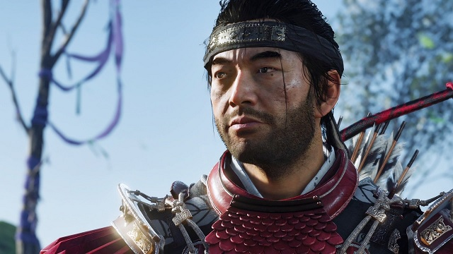

Hover for screenshots: Jin Sakai/The GhostLord ShimuraKhotun Khan
Ghost of Tsushima is a fictional story based on the very real attempted conquering of Japan by the Mongol empire in the 13th century.
The story revolves around Jin Sakai, of clan Sakai, as one of the last remaining samurai on Tsushima island attempting to
protect and save his island from the invading Mongol horde. Grappling with his his concepts of honor and discipline a samurai,
Jin is forced to employ guerilla warfare and recruit all that he can to save his people.
Despite the names, clans, and story of the game being entirely fiction, this game does a wonderful job of putting you in the
position of a 13th century samurai defending Japan and their shogun from an invading enemy. The game is also both visually and
audibly beautiful, borrowing many tropes from director Akira Kurosawa and the comic book series Usagi Yojimbo.